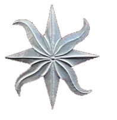
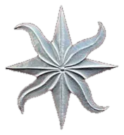
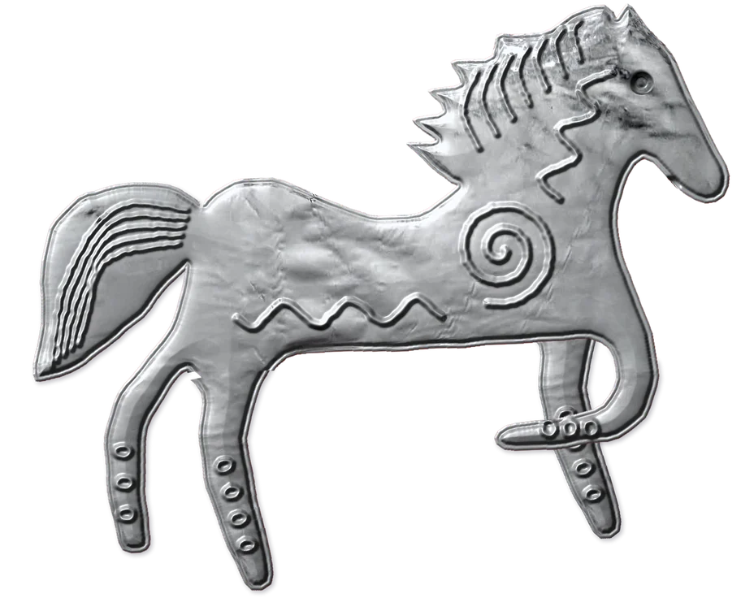
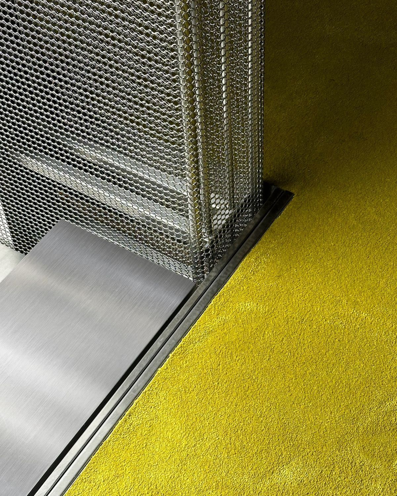
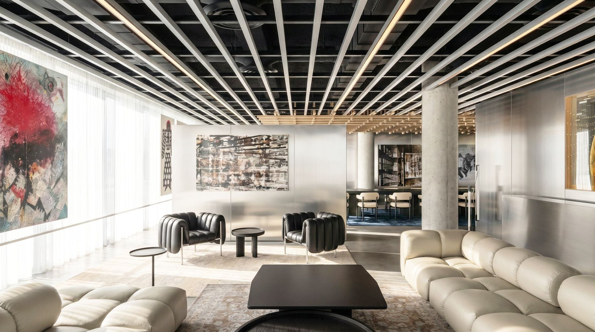

isilkuranyanli
2026
Selected works
An interior designer with a strong focus  
My story
professional · academic · socialprofessional
M.A. Interior Designer
- Ippolito Fleitz Group, DE
- Folistudio, TR
- Studio Azzolina, IT
- Zilberman Gallery, DE
I am an interior designer delivering high-end residential, commercial and workspace projects, from concept and design development to FF&E selection and installation. My approach to space combines curatorial thinking with a strong focus on art, materiality and spatial composition.
academic
M.A. Architect
- Domus Academy, IT
- Escola Artística do Porto, PT
- Özyeğin University, TR
After completing my B.Sc. in Architecture in Istanbul, I explored different dimensions of design through my Erasmus experience in Porto and my M.A. in Urban Vision and Architectural Design in Milan. My studies in Istanbul shaped my understanding of architectural language, analytical thinking and urban-scale decisions. In Porto, I explored the intersection of architecture and art, while Milan deepened my approach to concept development and refined my design sensibility.
social
Beyond the studio
- Travel
- Yoga & meditation
- Swimming & sailing
- Reading, art & good food
Travel, art, books and good food keep my eye curious, while yoga, swimming and sailing keep me grounded. Each one brings back a new reference, whether a texture, a color or a way of living, that quietly finds its way into my work.
My philosophy
curiosity
Every project starts with a question, and every idea needs the right image. I search for it across contemporary art, architecture and fashion.
flaneur
The city is a palimpsest, and the flaneur both reads and writes it. Moving through its layers, I look for the point where a place shapes its people and people quietly reshape the place.
aesthetics
For me, aesthetics is a way of seeing rather than a style. Material, proportion and light hold my attention as much in a street or a shop window as in a gallery, and these everyday observations shape how I compose.
thank you!
get in touch:
- +4917667780418Call
- isilkurann@gmail.comMail
- isilkuranLinkedIn